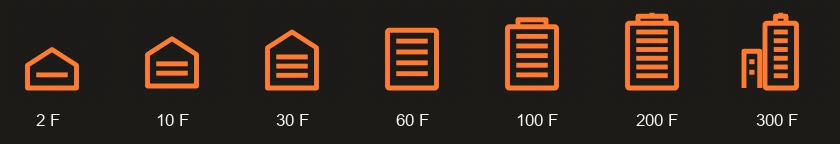
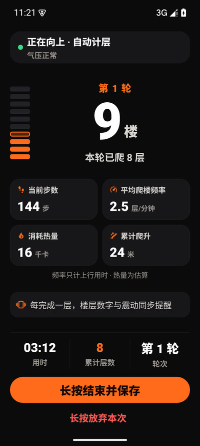

App 实际界面 · 演示数据
种高度参照从球门到珠穆朗玛峰
档楼栋图标随每次爬升生长
记录留在本机无需注册，即可开始
01 / 给努力一个参照
小小的楼梯，
大大的世界。
爬了多少米，听起来有点抽象。
如果这份努力，已经和一座地标一样高呢？
37 种高度参照，让日常的累积有了新的模样。从熟悉的球门、城市的高塔，一路看到珠峰的高度。
看看 App 里的样子8,848.86米
高度参照示意；山峰采用海拔，不代表实际登顶。
进步，也可以看得见
今天的小屋，
明天的高楼。
每次训练完成的楼层越多，记录里的楼栋图标就越高。7 档变化，为每次认真爬楼留下一枚小小的纪念。

02 / 简单开始，认真记录
专心向上。
其他的，交给循阶。
从开始一轮，到保存成果。
让每一次爬楼，都有清楚的来路。
截图来自 App 实际界面，数值均为演示数据。
查看 26 组浅深色原生对照与动画录像



你的记录，留在你的手机里。训练数据本地保存；可在设置里导出备份，换机前记得保存一份。
查看源码03 / 第一步，很简单
从熟悉的楼梯，
开始新的习惯。
- 01
下载并安装
下载 Android 安装包，按手机提示允许安装。首次打开时，完成 App 内的权限设置。
- 02
标定你的楼栋
在新楼栋开始第一轮，每到一层点一下。结束后保存楼栋，让循阶认识这段楼梯。
- 03
下次，直接向上
选择已经保存的楼栋开始训练，体验自动计层。结束保存成果，在记录页回看进步。
循阶 STEPLOOP / ANDROID
下一层，
现在开始。
1.1.3 公开试用版 · 2026.10.10
Android 7.0+ · ARM64 / x86_64 · 79.6 MB
开始前，你可能想知道
已经装过循阶，怎么保留记录更新？
先到 App「设置 → 备份与导出 → 保存备份到下载」，保存一份更新前的备份。公开版 1.0.5 / 1.0.7 / 1.1.2 可以用本页安装包覆盖更新。
如果你安装的是内部测试版，签名可能不同，需要对应的内部安装包。遇到签名冲突，请保留现有 App 和数据，先反馈问题，不要卸载或清空数据。
下载后，手机提示不能安装怎么办？
本页下载的是 APK 安装包。请在 Android 7.0 或更高版本的手机上打开，按系统提示为下载所用的浏览器或文件管理器允许「安装未知应用」，再继续安装。安装包由 GitHub Releases 提供。
我的记录会上传吗？需要登录吗？
开始训练无需注册。训练记录保存在本机，导出备份由你主动操作。更换手机、卸载 App 或清空应用数据前，请先保存备份。普通备份主要用于恢复训练记录，不包含完整原始传感器日志。
自动计层，适合所有手机和楼梯吗？
目前是公开试用版。自动计层受手机传感器、楼栋标定和后台设置影响，首次使用建议在熟悉的楼梯上短程试用，并对照实际楼层核对记录。发现误差可以修正层数，并在 GitHub 反馈。
界面的热量数值为估算。高度参照用于展示累计爬升，山峰使用海拔，不代表真实登顶。